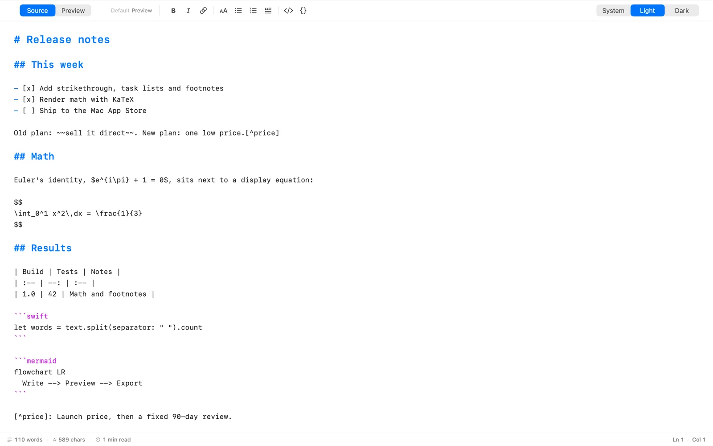
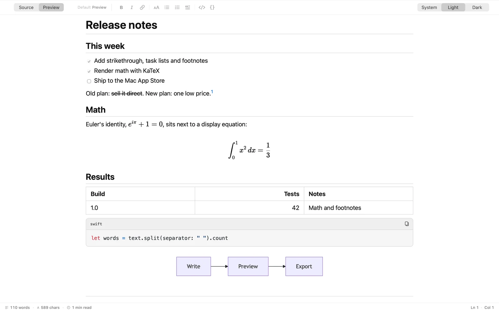

Task lists
- [x] Write it - [ ] Ship it
- Write it
- Ship it
Markdown editor for Mac
Write in plain text. Flip to a clean preview. Export when it is ready. miniMark is a small native Mac app that opens your .md files and stays out of your way.


The preview covers the Markdown people actually write in READMEs, notes and docs. Each box below is the source on top and the result underneath.
- [x] Write it - [ ] Ship it
| Build | Tests | | :-- | --: | | 1.0 | 42 |
| Build | Tests |
|---|---|
| 1.0 | 42 |
Plain text, plus notes.[^1] [^1]: Numbered for you.
Plain text, plus notes.1
Euler: $e^{i\pi} + 1 = 0$
Euler:
```swift let answer = 42 ```
let answer = 42
```mermaid flowchart LR Write --> Preview ```
Open and save ordinary .md and .markdown files wherever you keep them. No library to import, no account, no format that locks you in.
Press ⇧⌘P to flip between Source and Preview. Pick which one new documents open in.
Bold, italic, links, headings, lists, quotes, inline code and code blocks are one click away. Counts for words, characters, reading time, line and column sit at the bottom.
Save TXT, RTF or HTML from the File menu. Print and choose Save as PDF. RTF opens in most word processors.
Relative images show up in the preview. The first time, macOS asks you to allow the document's folder, and remembers your answer.
Follow your Mac or pick an appearance of your own. Code blocks and diagrams switch with it.
miniMark collects nothing. No accounts, no analytics, no tracking.
Read the privacy policy, which is short.
A small, native Markdown editor for Mac. It opens .md and .markdown files, lets you edit them as plain text, and shows a clean rendered preview.
Macs with Apple silicon running macOS 14 Sonoma or later.
No. There are no accounts, no analytics and no tracking, and nothing you write is sent to anyone. Your files stay where you save them.
Headings, bold, italic, strikethrough, links, images, lists, task lists, tables, quotes, code blocks with highlighting, footnotes, LaTeX math, and Mermaid diagrams.
Use File, Export for TXT, RTF or HTML. Use File, Print and choose Save as PDF for a PDF. RTF files open in Word and Pages. Math and diagrams appear in HTML and PDF; the RTF export keeps math as its source text.
The Mac only lets an app read files you have allowed. When your document links to pictures in its folder, miniMark asks once so it can show them in the preview.